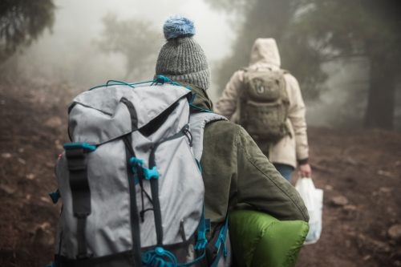

Поход в горы — это всегда увлекательное и захватывающее приключение, полное неожиданных открытий и ярких впечатлений. С каждой вершиной, которую мы покоряем, открываются новые горизонты, живописные ландшафты и поразительная красота природы.
С самого утра, рано-рано, когда первые лучи солнца лишь касаются земли, мы собираемся в путь. Пустые рюкзаки наполняются необходимыми вещами — палатками, продуктами, инструментами и водой. Каждый знает свою роль: кто-то занимается организацией,
кто-то отвечает за питание, а кто-то — за навигацию. Это одновременно сплочение команды и возможность проявить индивидуальные способности.
Поднимаясь в горы, мы оставляем позади суету городской жизни. С каждым шагом ощущается легкость и свобода. В воздухе витает свежесть, а вокруг расстилаются величественные пейзажи: зелёные склоны, кристально чистые озёра и звонкие ручьи.